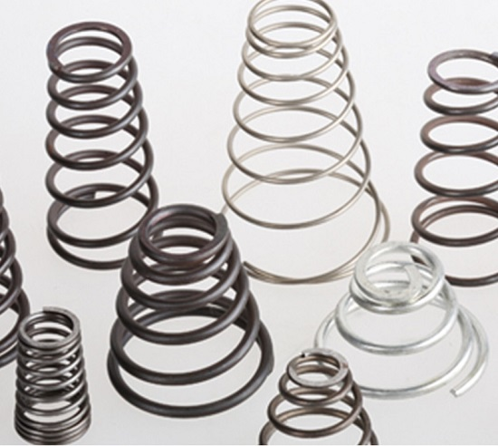

Main Factors Affecting Spring Fatigue Strength
2020-03-03 12:20:19
- TAG :
1. Yield strength
There is a certain relationship between the material's yield strength and fatigue limit. Generally speaking, the higher the material's yield strength, the higher the fatigue strength. Therefore, in order to increase the fatigue strength of the spring, efforts should be made to increase the yield strength of the spring material, or use Materials with a high yield strength to tensile strength ratio. For the same material, fine grain structure has higher yield strength than coarse grain structure.
2. The surface state
Most of the maximum stress occurs in the surface layer of the spring material, so the surface quality of the spring has a great impact on fatigue strength. Defects such as cracks, blemishes, and scars caused by spring materials during rolling, drawing, and rolling are often the cause of fatigue fracture of springs.
The smaller the surface roughness of the material, the smaller the stress concentration and the higher the fatigue strength. Influence of material surface roughness on fatigue limit. As the surface roughness increases, the fatigue limit decreases. In the case of the same roughness, different steel types and different rolling methods have different degrees of fatigue limit reduction. For example, the degree of reduction of a cold coil spring is smaller than that of a hot coil spring. Because the steel hot-rolled spring and its heat treatment are heated, the surface of the spring material is roughened due to oxidation and decarburization occurs, which reduces the fatigue strength of the spring. Grinding, pressing, blasting and rolling of the material surface. Both can increase the fatigue strength of the spring.
3. Size effect
The larger the size of the material, the higher the possibility of defects caused by various cold working and hot working processes, and the greater the possibility of surface defects. These reasons will cause the decline in fatigue performance, so it is necessary to calculate the fatigue strength of the spring. Consider the effect of size effects.

4. Metallurgical defects
Metallurgical defects refer to non-metallic inclusions, bubbles, segregation of elements, etc. in the material. The inclusions on the surface are the source of stress concentration, which will cause premature fatigue cracks between the inclusions and the substrate interface. The use of vacuum smelting, vacuum casting and other measures can greatly improve the quality of steel.
5. Corrosive media
When a spring works in a corrosive medium, it becomes a source of fatigue due to pitting on the surface or corrosion of the grain boundaries on the surface, which will gradually expand and cause fracture under the action of variable stress. For example, spring steel working in fresh water has a fatigue limit of only 10% to 25% in air. The effect of corrosion on spring fatigue strength is not only related to the number of times the spring is subjected to variable load, but also to the working life. Therefore, when designing and calculating the spring affected by corrosion, the working life should be considered.
In order to ensure its fatigue strength, springs working under corrosive conditions can use materials with high corrosion resistance, such as stainless steel, non-ferrous metals, or a protective layer on the surface, such as plating, oxidation, plastic spraying, painting, etc. Practice has shown that cadmium plating can greatly increase the fatigue limit of springs.
6. Temperature
The fatigue strength of carbon steel decreases from room temperature to 120 ° C, rises from 120 ° C to 350 ° C, and decreases after the temperature is higher than 350 ° C. There is no fatigue limit at high temperatures. For springs operating under high temperature conditions, heat-resistant steel should be considered. At below room temperature, the fatigue limit of steel increases.
The values of σ-1 and τ-1 given in the general material table refer to the data obtained when the surface of the material is smooth and in air. If the working conditions of the spring in question do not match the above conditions, σ-1 or τ-1 should be corrected. The influencing factors generally considered are stress concentration, surface condition, size, temperature, etc., and the stress concentration coefficient Kσ ( Kτ), surface state coefficient Kβ, size coefficient Kε, temperature coefficient Kt, etc., the actual fatigue limit is: